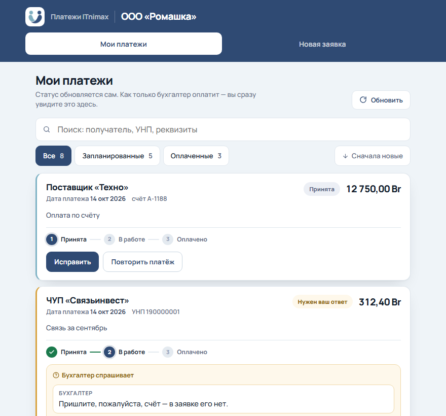
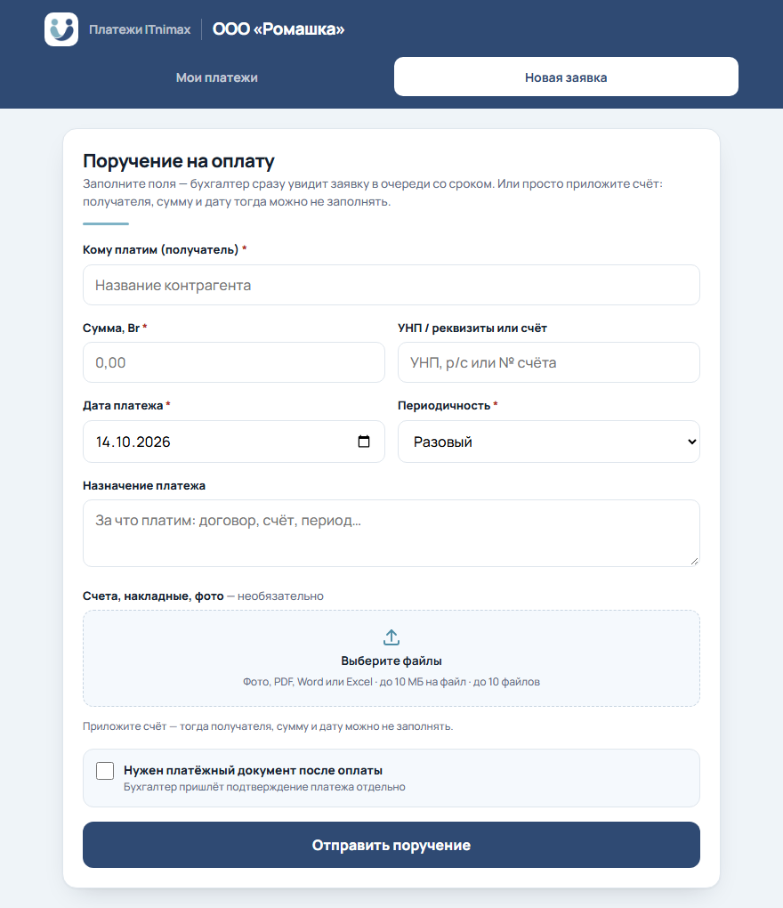
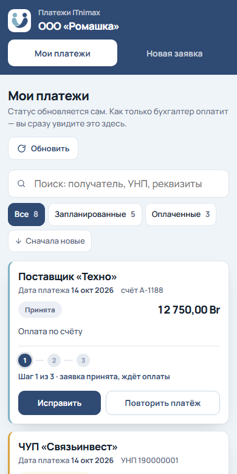
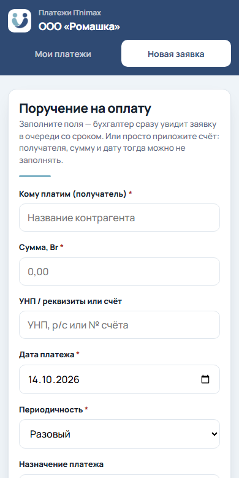

Поручить нам платёж — дело нескольких секунд
Отправьте счёт в Telegram, остальное сделаем мы. Ниже — всё, что нужно знать, на примерах: так это выглядит у вас в телефоне.
1Подключите бота — один раз
- Откройте персональную ссылку на бота, которую прислал бухгалтер.
- Нажмите Старт.
- Бот ответит «Готово! Аккаунт привязан» — всё.
- Под полем ввода появятся кнопки 🆕 Новая заявка и 📋 Мои платежи — команды набирать не нужно.
- Несколько фирм? Откройте ссылку каждой фирмы — привязки сложатся, уведомления придут по всем.
- Ссылка личная: по ней видны платежи вашей фирмы. Не пересылайте её посторонним.
2Отправьте счёт — заявка создастся сама
Просто пришлите боту фото счёта или файл. Или перешлите его из другого чата или почты — как поставщику переслали бы. Ничего заполнять не нужно.
- Получателя и сумму бухгалтер возьмёт из документа.
- Платёж встанет на ближайший рабочий день — бот сразу назовёт дату.
- Подпись к файлу попадёт в назначение платежа: удобно написать, например, «аренда за октябрь».
- Подойдут фото, PDF, Word, Excel — до 10 МБ.
- Один файл — одна заявка. Многостраничный счёт лучше прислать одним PDF.
- Если у вас несколько фирм, бот спросит кнопкой, от какой заявка.
3Смотрите, что с платежом
Нажмите 📋 Мои платежи — бот покажет все открытые платежи со сроками и статусами.
Каждая заявка проходит путь:
- Принята — бухгалтер видит заявку в очереди.
- В работе — платёж готовится.
- Оплачено — деньги ушли, бот сообщил вам об этом сам.
- Если платим частями, в списке виден остаток: «остаток X из Y».
4Бот сам сообщит об оплате
Следить не нужно: как только платёж проведён, придёт сообщение.
- Платёжное поручение бот присылает файлом — его можно сразу переслать поставщику как подтверждение оплаты.
- Если платёж оплачивается частями, сообщение придёт о каждой части — с остатком и датой, когда оплатим остаток.
- Регулярный платёж (аренда, связь) после оплаты сам встаёт в очередь на следующий период.
5Если бухгалтеру нужно уточнить
Вопрос по заявке придёт в бот. Ответить можно прямо там — текстом, файлом или и тем и другим.
- Нажмите ✍️ Ответить под вопросом.
- Напишите ответ или пришлите файл — подпись к файлу тоже уйдёт бухгалтеру.
- Бот ответит «Передал бухгалтеру ✅».
6Нужна точная дата или регулярный платёж?
Тогда заведите заявку по шагам: нажмите 🆕 Новая заявка. Бот спросит по очереди и в конце покажет всё целиком для проверки.
- Кому платим
- Сумма
- Реквизиты (УНП или счёт) — можно пропустить
- Дата — кнопками «Сегодня», «Завтра» или числом
- Периодичность: разовый, еженедельно, ежемесячно
- Назначение — можно пропустить
- Нужен ли платёжный документ
- Файл счёта — можно пропустить
- Передумали посередине — /cancel.
7То же самое — на сайте
С компьютера удобнее сайт — по персональной ссылке от бухгалтера. Платежи там те же, что в боте: можно смешивать как угодно.

На компьютере: «Мои платежи» — статус каждой заявки, вопросы бухгалтера, документы.
Как оставить заявку с компьютера
- Откройте вкладку Новая заявка.
- Есть счёт — нажмите «Выберите файлы» и приложите его. Тогда получателя, сумму и дату можно не заполнять: бухгалтер возьмёт их из документа.
- Счёта нет — укажите, кому платим, сумму и дату. Реквизиты и назначение — по желанию.
- Платёж повторяется (аренда, связь) — выберите периодичность «Ежемесячно» или «Еженедельно».
- Нужно подтверждение оплаты — поставьте галочку «Нужен платёжный документ».
- Нажмите Отправить поручение. Заявка сразу появится у бухгалтера и у вас в «Мои платежи».

С телефона


- «Исправить» — пока заявка «принята», её можно поправить: дату, сумму, файлы.
- «Повторить» — завести такой же платёж, как в прошлый раз, в одно нажатие.
8Когда мы платим
Бухгалтерия работает с понедельника по пятницу до 17:00.
- Заявка «на сегодня», отправленная после 17:00 или в выходной, сама встанет на ближайший рабочий день — бот и сайт назовут дату.
- Будущую дату на субботу или воскресенье система не примет и попросит выбрать рабочий день.
- Планировать наперёд можно в любое время.
?Частые вопросы
Отправил счёт случайно или не тот — что делать?
Пока заявка «принята», её можно исправить на сайте кнопкой «Исправить». Или просто напишите своему бухгалтеру.
Почему в платеже написано «сумма в документе»?
Заявка создана по файлу, и сумму бухгалтер берёт из самого счёта. Так и задумано: перепечатывать её не нужно.
У меня несколько фирм. Как не перепутать?
Привяжите бота по ссылке каждой фирмы. Уведомления подписаны названием фирмы, а когда вы присылаете счёт, бот спрашивает кнопкой, от какой он фирмы.
Сменил телефон или аккаунт Telegram
Откройте свою ссылку на бота с нового аккаунта и нажмите «Старт». Уведомления переедут туда.
Ссылка попала к посторонним
Сообщите бухгалтеру: он выпустит новую, а старая сразу перестанет работать. Все платежи останутся на месте.
Бот не отвечает или пишет «Вы ещё не привязаны»
Откройте персональную ссылку от бухгалтера ещё раз и нажмите «Старт». Если не помогло — напишите бухгалтеру.